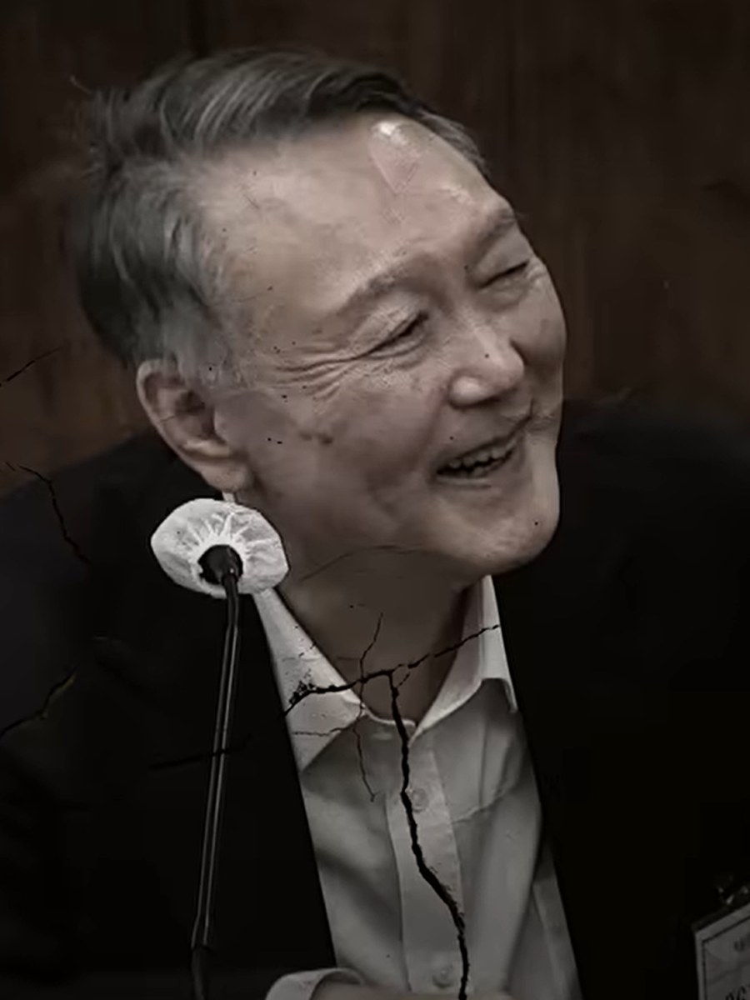
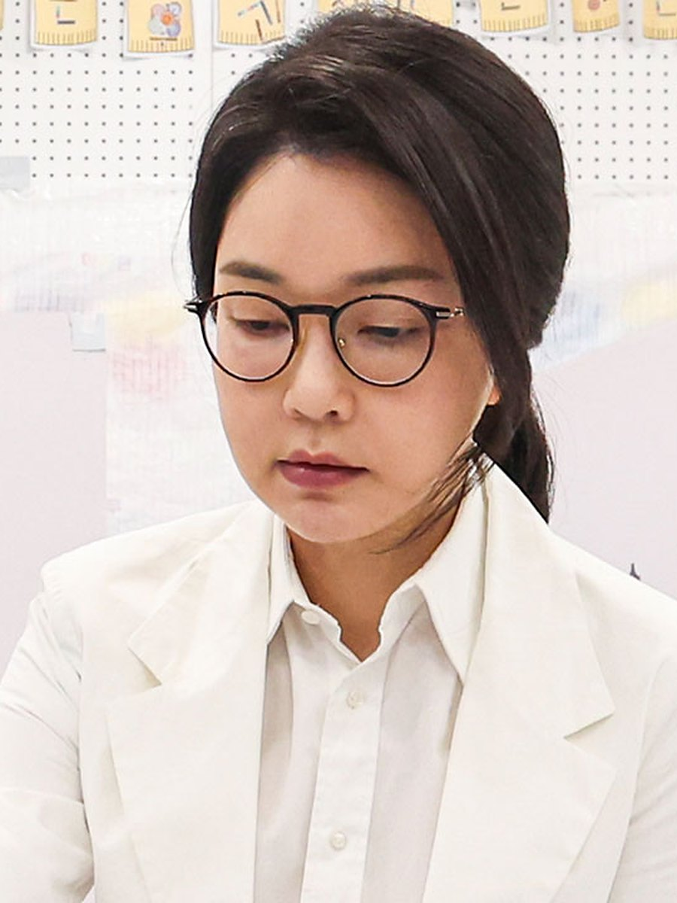

처음
관계도
재판 목록
타임라인
그날 밤

전 대통령
윤석열
다음 선고 12.4
무인기 2심

윤석열 전 대통령 배우자
김건희
다음 선고 12.3
매관매직
법정에 선
165명
2024년 12월 3일 밤, 비상계엄이 선포됐다.
103
선고
30
형 확정
13
다가오는 선고
12·3 비상계엄 이후
724
일
16
:
52
:
49
얼굴 아래 막대 · 165명
아직 선고 전
73
1심 선고까지
51
2심 선고까지
12
형 확정
29
선고를 앞둔 사람
43